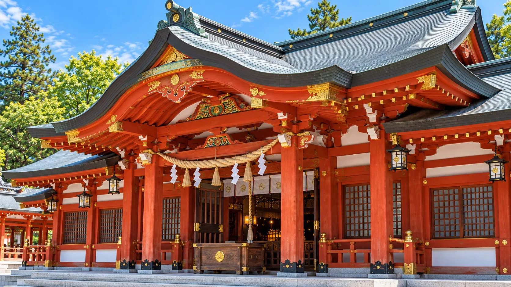
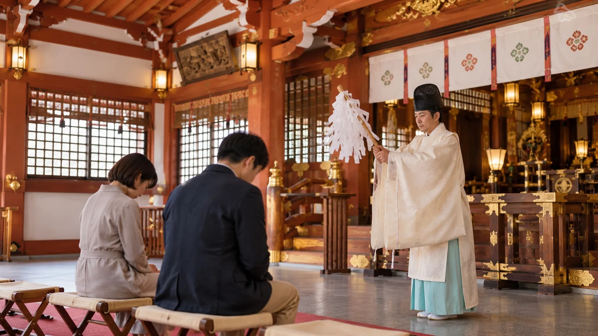

Prayer
御祈祷・御利益
心身の健やかさや良いご縁、日々の営みが穏やかに続くことを願い、真心を込めてお祈りします。
- 病気平癒
- 縁結び
- 商売繁盛


Community
地域への取り組み
赤綴生活支援会では、暮らしに不安を抱える方を対象に、生活相談、食事の提供、一時的な宿泊支援を行っています。
相談内容に応じて、生活の立て直しに向けた情報提供や就労支援、継続的な見守りも行い、地域の中で穏やかな生活を取り戻せるよう支えています。



Prayer
心身の健やかさや良いご縁、日々の営みが穏やかに続くことを願い、真心を込めてお祈りします。
Community
赤綴生活支援会では、暮らしに不安を抱える方を対象に、生活相談、食事の提供、一時的な宿泊支援を行っています。
相談内容に応じて、生活の立て直しに向けた情報提供や就労支援、継続的な見守りも行い、地域の中で穏やかな生活を取り戻せるよう支えています。